Core 1 220-1201 Networking
Study materials related to computer networks, network infrastructure, and troubleshooting.
Key Topics Covered: Network Protocols & Ports, TCP/IP Model, SOHO Networks, Network Devices & Tools, Wireless Standards, IP Addressing
Contents
OSI & TCP/IP Models
Understanding the OSI (Open Systems Interconnection) and TCP/IP models is fundamental to networking. These models describe how data is transmitted across networks.
OSI Model (7 Layers)
| Layer | Name | Function | Examples |
|---|---|---|---|
| 7 | Application | User applications & services | HTTP, HTTPS, SMTP, FTP, Telnet |
| 6 | Presentation | Data translation & encryption | SSL/TLS, JPEG, MPEG |
| 5 | Session | Session management | NetBIOS, RPC, PPTP |
| 4 | Transport | End-to-end communication | TCP, UDP, SCTP |
| 3 | Network | Routing & IP addressing | IP, ICMP, IGP |
| 2 | Data Link | MAC addressing & switching | Ethernet, PPP, Frame Relay |
| 1 | Physical | Physical transmission | Cables, Hubs, Repeaters |
TCP/IP Model (4-5 Layers)
The TCP/IP model is a more practical model used in modern networking.
| Layer | Name | Protocols |
|---|---|---|
| 4-5 | Application | HTTP, HTTPS, SMTP, FTP, DNS, DHCP, Telnet |
| 3 | Transport | TCP, UDP |
| 2 | Internet | IP, ICMP, IPsec |
| 1 | Link/Physical | Ethernet, PPP, ARP |
Network Protocols & Ports
Protocols define the rules and standards for communication between network devices such as how data is formatted, transmitted, and received. You can think of Protocols like it is the languages spoken through doorways. They set the rules that define how communication happens.
Ports are logical endpoints identifed by numbers (ex. HTTP is Port 80). They allow multiple devices to run simultaneously on a single IP address by directing traffic to the correct service. Ports are like doorways into a device. They have specific entry and exit points for data tied to services
Common Protocols & Ports
| Protocol | Port(s) | Layer | Purpose |
|---|---|---|---|
| HTTP (Hypertext Transfer Protocol) | 80/TCP | Application | Unsecured web traffic |
| HTTPS (Hypertext Transfer Protocol Secure) | 443/TCP | Application | Secured web traffic (SSL/TLS) |
| FTP (File Transfer Protocol) | 20, 21/TCP | Application | File transfer |
| SSH (Secure Shell) | 22/TCP | Application | Secure shell & remote access |
| Telnet | 23/TCP | Application | Unsecured remote access |
| SMTP (Simple Mail Transfer Protocol) | 25, 587/TCP | Application | Email sending |
| DNS (Domain Name System) | 53/UDP, TCP | Application | Converts domain names typed in the URL to IP addresses |
| DHCP (Dynamic Host Configuration Protocol) | 67, 68/UDP | Application | Dynamic IP assignment |
| POP3 | 110 (unencrypted), 995/TCP (encrypted) | Application | Email retrieval |
| IMAP | 143 (unencrypted), 993/TCP (encrypted) | Application | Email access (secure) |
| NetBIOS (Network Basic Input/Output System) | Name services 137/UDP - Session Services 139/TCP | Application | Finds devices on the network by device name |
| SMB (Server Message Block) | 445/TCP | Application | File sharing & printer sharing; also called CIFS (Common Internet File System) |
| SNMP (Simple Network Management Protocol) | Quries: 161/UDP, Traps: 162/UDP | Application | Gathers statistics and manages network devices |
| LDAP (Lightweight Directory Access Protocol) | 389/TCP | Application | Stores and retrieves information in a network directory commonly used in Microsoft Active Directory |
| RDP (Remote Desktop Protocol) | 3389/TCP | Application | Remote desktop protocol |
Transmission Control Protocol (TCP)
TCP is one of the core transport layer protocols used for data transmission over IP networks. TCP ensures reliable delivery, ordered and error-checked of the data. TCP is Connection-oriented communication. It establishes a three-way handshake (SYN → SYN-ACK → ACK) before data transmission. This process ensures data integrity and order. Error Detection and Retransmission uses checksums and acknowledgement messages for reliable delivery. Also retransmits lost packets to prevent data corruption.
User Datagram Protocol (UDP)
UDP is another core transport layer protocol. Unlike TCP, UDP is connectionless and does not guarantee reliable delivery or ordered packets. UDP is faster and has lower overhead, making it suitable for real-time applications where speed is more critical than reliability.
| Feature | TCP (Transmission Control Protocol) | UDP (User Datagram Protocol) |
|---|---|---|
| Connection | Connection-oriented (3-way handshake) | Connectionless |
| Reliability | Guaranteed delivery, ordered packets | No guarantees (best effort) |
| Speed | Slower (overhead) | Faster (minimal overhead) |
| Ordering | Maintains packet order | No ordering guarantee |
| Use Cases | Email, File transfer, Web browsing | Video streaming, VoIP, Gaming |
Good Practices for Secure TCP/UDP
Firewall Configuration
Configure firewalls and access control lists to strictly filter TCP and UDP traffic.
Use Secure Protocols
Use HTTPS over HTTP, and SFTP over FTP, for secure, encrypted data transmission.
Regular Updates
Keep software and firmware updated to patch vulnerabilities.
Logging / Monitoring
Maintain detailed logs of TCP/UDP connections to detect abnormal traffic patterns. Monitor for suspicious behavior such as SYN floods on TCP or amplification attacks over UDP. Implement SYN flood protection for TCP and limit UDP request rates to prevent Dos/DDoS.
Strong Authentication
Use strong passwords and implement multi-factor authentication, digital certificates, or secure keys for services.
Encryption
Use TLS/SSL for TCP traffic (HTTPS, SMTPS, IMAPS) and Datagram TLS (DTLS) for UDP traffic to prevent eavesdropping.
Network Topologies
Network topologies describe how devices (nodes) are physically or logically arranged and connected within a network. Different topologies offer various advantages and disadvantages based on factors like scalability, fault tolerance, cost, and performance.
Physical topology: The actual layout of devices/cables (star, bus, mesh, etc.)
Logical topology: How data flows regardless of physical connections (e.g, Ethernet uses a logical bus even in a physical star)
| Topology | Description | Advantages | Disadvantages | Common Use |
|---|---|---|---|---|
| Bus | All devices connected to a single central cable (bus). | Easy to implement, cost-effective for small networks. | One cable failure breaks the network, hard to scale, limited cable length. | Legacy Ethernet (coax) |
| Star | All devices connected to a central hub or switch. | Easy to manage, scalable, failure of one device doesn't affect others. | Central hub failure affects entire network, more cabling required. | Modern Ethernet LANs |
| Ring | Devices connected in a circular fashion, data travels in one direction. | Equal access, predictable performance | One failure disrupts the whole network ring unless dual-ring implemented in infrastructure | Legacy Token Ring, FDDI |
| Mesh | Devices interconnected with multiple paths between them. | High redundancy and reliability, high fault tolerance, and scalable in backbone/WAN | Expensive, complex wiring and configuration | WANs, telecom, backbone networks |
| Hybrid | Combination of two or more topologies (e.g., star-bus). | Flexible design, scalable, can leverage advantages of multiple topologies. | Complex management and design, higher cost, hard to troubleshoot | Large Enterprise networks |
| Point-to-Point | Direct connection between 2 devices | Fast, simple and secure | Only supports 2 nodes | WAN links, leased lines |
Network Devices / Components
Network devices are hardware components or software components that enable communication and data flow within networks. Each device operates at different OSI layers.

Router
Connects multiple networks and routes data packets between them based on IP addresses. Operates at Layer 3 (Network).
- Key Function: IP routing & NAT
- SOHO Example: Wireless router at home
- Interfaces: WAN, LAN ports
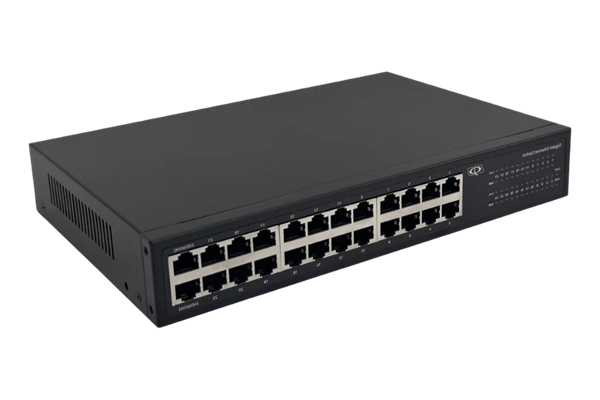
Switch
Connects devices within a LAN and forwards frames based on MAC addresses. Operates at Layer 2 (Data Link).
- Key Function: MAC address learning & forwarding
- VLAN Support: Virtual LAN segmentation
- Ports: 4-48+ Ethernet ports
Firewall
Filters incoming/outgoing network traffic based on security rules. Can operate at Layer 3-7.
- Key Function: Packet filtering & protection
- SOHO: Often built into home routers
- Types: Stateful, proxy, next-gen
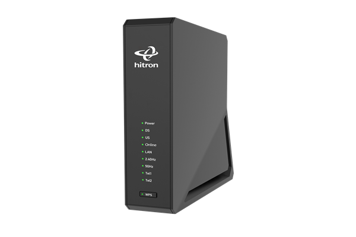
Modem
Modulates and demodulates digital signals for transmission over ISP lines. Converts WAN signal to network traffic.
- Types: Cable, DSL, Fiber
- Connection: Coax, phone line, or fiber
- Output: Ethernet to router
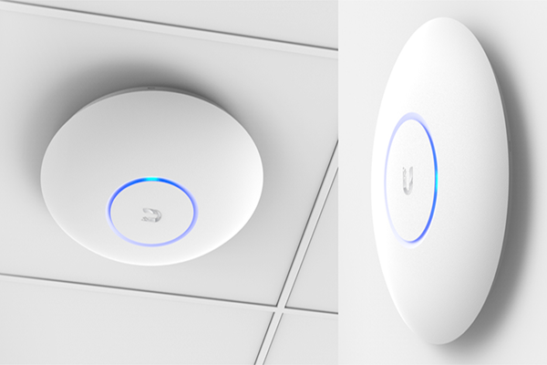
Access Point (AP)
Extends network range wirelessly. Connects to a wired network and broadcasts Wi-Fi signal.
- Key Function: Wireless coverage extension
- Standards: All 802.11 standards
- Setup: Often in bridge or AP mode
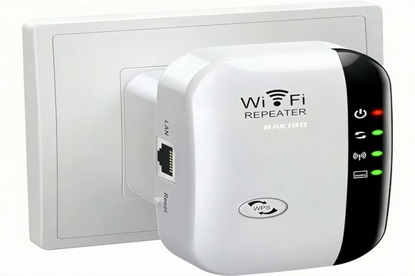
Repeater
Repeater: Amplifies signals to extend Wi-Fi range.
- Key Function: Signal boosting
- Placement: Midway between router and dead zone
- Limitations: May reduce bandwidth
Patch Panels
Patch panels are centralized connection points where multiple network cables are terminated and organized. They serve as a structured interface between incoming and outgoing lines, allowing technicians to manage and reroute network connections without disturbing the permanent cabling. Each cable from a workstation or network device is terminated into a patch panel port, and short patch cables connect those ports to switches, routers, or other devices.
Types of Patch Panels
- Copper patch panels: Terminate twisted pair cables (Cat5e, Cat6, Cat6a) and connect them to Ethernet networks.
- Fiber optic patch panels: Used for high-speed backbone connections, providing connectors for fiber strands.
- Shielded vs unshielded panels: Shielded panels provide extra protection against EMI, while unshielded fit typical office spaces.
- Modular patch panels: Allow insertion of keystone jacks for flexible copper, fiber, or mixed media builds.
Benefits
- Simplifies cable management and troubleshooting.
- Reduces wear on networking gear by avoiding constant plugging directly into switches or routers.
- Provides scalability for adding, removing, or rerouting connections.
- Enhances organization and professionalism of structured cabling.
- Improves airflow and reduces clutter in racks and data centers.
Installing & Configuring Patch Panels
- Planning and layout: Identify required drops, choose the correct panel type (copper, fiber, modular), and position it for easy rack access.
- Mounting: Secure the patch panel to a rack or wall-mount bracket in the network closet or server room.
- Cable preparation: Run Ethernet or fiber cables to the panel location and label both ends clearly.
- Termination: Use a punch-down tool (for copper) or appropriate fiber connectors, following T568A or T568B as required.
- Testing: Verify each connection with a cable tester for continuity, pinout, and signal integrity.
- Connecting to switches/routers: Use short patch cords to tie panel ports to switch or router interfaces.
- Documentation: Record port numbers, device locations, and cable paths to speed troubleshooting and maintenance.
- Labeling: Clearly label all patch panel ports and corresponding wall jacks.
Firewalls
A firewall is a security device or software that monitors, filters, and controls incoming and outgoing network traffic based on predefined security rules. It acts as a barrier between trusted internal networks and untrusted external networks such as the internet. Firewalls are essential for preventing unauthorized access and protecting systems from malicious activity.
Types of Firewalls
Packet-filtering firewalls
Examine each packet in isolation, focusing on header information such as source IP, destination IP, source port, destination port, and protocol type (TCP, UDP, ICMP). They do not track session state or inspect payload content, making them very fast but limited in security. This means they can block or allow traffic based on simple rules (e.g., block all traffic on port 23 for Telnet) but cannot detect malicious content hidden inside the packet payload.
Stateful inspection firewalls
Track active connections by monitoring the “state” of each session (e.g., whether a TCP handshake is complete or which packets belong to an established flow). Instead of just checking individual packets in isolation, they maintain a state table of ongoing connections. This allows the firewall to determine whether incoming packets are part of a valid, established connection or unexpected/unauthorized traffic. Because they understand the context of traffic, they are more secure than simple stateless packet filters.
Application-layer (proxy) firewalls
Go beyond examining ports and headers by inspecting traffic at the application layer (e.g., HTTP, FTP, SMTP). They terminate the client connection and create a new connection to the destination on behalf of the client, acting as an intermediary. This allows them to inspect the entire packet, including the payload, to detect malicious content, filter based on application data, or enforce policies such as blocking specific websites. While they still check ports as part of normal packet handling, their main strength is analyzing application-level data, not just header information.
Next-Generation Firewalls (NGFWs)
Advanced firewalls that combine traditional stateful inspection with additional capabilities such as deep packet inspection (DPI), intrusion prevention, and application awareness. DPI goes beyond basic packet filtering by inspecting the actual contents (payload) of packets—not just headers like IP or port. This allows NGFWs to identify specific applications, malware signatures, or unauthorized content even if they use standard ports (e.g., blocking Skype over port 80). Compared to regular packet filtering, which only checks header info (source/destination address, port, protocol), DPI analyzes full traffic content, enabling detection of threats hidden inside legitimate protocols and enforcing policies at the application level.
Firewall Placement
- Host-based firewalls: Installed on individual devices to protect a single host.
- Network-based firewalls: Deployed at the edge of the network to protect entire LANs.
Key Features and Functions
- Allow or block traffic based on rules (IP, port, protocol).
- Prevent unauthorized access and remote attacks.
- Log traffic for auditing and troubleshooting.
- Support VPN passthrough or termination.
- Some include intrusion detection and prevention features.
Wireless Networking
Wireless networking allows devices to connect without physical cables using radio frequencies. IEEE 802.11 standards define Wi-Fi specifications.
Wi-Fi Standards (802.11)
| Standard | Frequency | Max Speed | Range | Notes |
|---|---|---|---|---|
| 802.11b | 2.4 GHz | 11 Mbps | ~100m | Obsolete |
| 802.11g | 2.4 GHz | 54 Mbps | ~100m | Backward compatible with 802.11b |
| 802.11a | 5 GHz | 54 Mbps | ~50m | Less interference, shorter range |
| 802.11n | 2.4/5 GHz | 600 Mbps | ~100m | MIMO technology, dual-band |
| 802.11ac | 5 GHz | 1.3 Gbps | ~50m | Very High Throughput (VHT) |
| 802.11ax (Wi-Fi 6) | 2.4/5 GHz | 10 Gbps | ~30m | OFDMA, latest standard |
| 802.11be (Wi-Fi 7) | 2.4/5/6 GHz | 30 Gbps+ | ~30m | Upcoming standard, enhanced features |
Wi-Fi Security Protocols
| Security Type | Strength | Status | Notes |
|---|---|---|---|
| Open (None) | None | ❌ Not recommended | No encryption, anyone can connect |
| WEP | Very Weak | ❌ Deprecated | Easily cracked, do not use |
| WPA | Weak | ⚠️ Legacy | Improvement over WEP but outdated |
| WPA2 (802.11i) | Strong | ✅ Current standard | AES encryption, widely supported |
| WPA3 | Very Strong | ✅ Latest standard | Enhanced security, protection against brute-force |
Key Wireless Concepts
- SSID: Service Set Identifier - the network name broadcast by AP
- Channel: 2.4 GHz has channels 1-13 (1, 6, 11 are non-overlapping)
- Frequency bands: 2.4 GHz (longer range, more interference) vs 5 GHz (shorter range, less interference)
- MIMO: Multiple-Input Multiple-Output - uses multiple antennas for better throughput
- Site survey: Process of analyzing wireless coverage and interference
IP Addressing
IP addressing is how devices identify and communicate with each other on networks. Understanding IPv4, IPv6, and subnetting is essential for networking.
IP Address is a unique numerical identifier assigned to every device on a network that uses the Internet Protocol (IP) to communicate.
Each IP address has two main parts which consist of..
- Network ID: identifies the specific network
- Host ID: identifies a specific device (host) on that network.
IP Assignment
- Static IP: Manually assigned and does not change. Used for servers, printers, and network devices.
- Dynamic IP: Automatically assigned by DHCP and can change over time. Common for client devices.
- Automatic Private IP Addressing (APIPA): a fallback IPv4 address (169.254.0.0/16) assigned when DHCP is unavailable. Allows network communication with no internet access.
IPv4 Addressing
Format: 32-bit address divided into four octets which are 8 bits each. Written in dotted decimal notation.
Example: 192.168.1.10
Each octet ranges from 0-255 allowing 4.3 billion possible addresses. 2³²
Decimal to Binary (Step by Step)
Convert the IPv4 address 192.168.1.10 to binary:
IPv4 Address Classes (Legacy Reference)
| Class | Range | Default Subnet Mask | Use |
|---|---|---|---|
| Class A | 1-126.x.x.x | 255.0.0.0 | Large networks |
| Class B | 128-191.x.x.x | 255.255.0.0 | Medium networks |
| Class C | 192-223.x.x.x | 255.255.255.0 | Small networks |
| Class D | 224-239.x.x.x | N/A | Multicasting |
| Class E | 240-255.x.x.x | N/A | Research/Testing |
Private IPv4 Address Range
| Range | CIDR | Common Use |
|---|---|---|
| 10.0.0.0 - 10.255.255.255 | /8 | Large private networks |
| 172.16.0.0 - 172.31.255.255 | /12 | Medium private networks |
| 192.168.0.0 - 192.168.255.255 | /16 | Small private networks (home/small office) |
Special IPv4 Addresses
| Address | Purpose |
|---|---|
| 127.0.0.1 | Loopback address for testing local host |
| 169.254.x.x | APIPA address when DHCP fails |
| 0.0.0.0 | Default route or unspecified address |
| 255.255.255.255 | Broadcast address for local network |
IPv6 Addressing
Format: Eight groups of hexadecimal numbers separated by colons. Example: 2001:0db8:85a3:0000:0000:8a2e:0370:7334
- Length: 128 bits (vs IPv4's 32 bits)
- Advantages: Vastly larger address space, built-in security (IPsec)
- Shorthand: Can omit leading zeros and consecutive zero groups (::)
- Link-local: fe80:: prefix for automatic local addresses
DHCP & DNS
- Automatically assigns IP addresses to devices on a network
- Process: DISCOVER → OFFER → REQUEST → ACK
- Uses ports 67 (server) and 68 (client)
- Includes lease time (how long address is valid)
- Also provides subnet mask, gateway, and DNS server addresses
- Translates domain names to IP addresses
- Uses port 53 (TCP and UDP)
- Record types: A (IPv4), AAAA (IPv6), MX (mail), CNAME (alias), TXT (text)
- Recursive resolution through root, TLD, and authoritative nameservers
- Common public DNS: 8.8.8.8 (Google), 1.1.1.1 (Cloudflare)
Networking Tools & Troubleshooting
Network administrators use various physical tools, command-line and graphical tools to diagnose network issues and verify connectivity.
Essential Networking Tools
Crimper
Attaches modular connectors such as RJ45, or RJ11 to the ends of phone or network cables
Punchdown Tool
Inserts and cuts wires into insulation-displacement connectors on patch panels, keystone jacks, and punchdown blocks
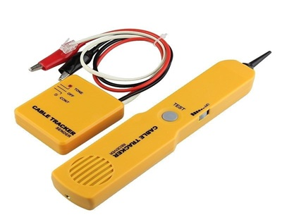
Tone Generator and Probe Kit
The Tone Generator sends an analog signal or an electrical tone then the probe kit detects the tone with a tone, allowing technicians to trace and identify cables within a bundle or wall.
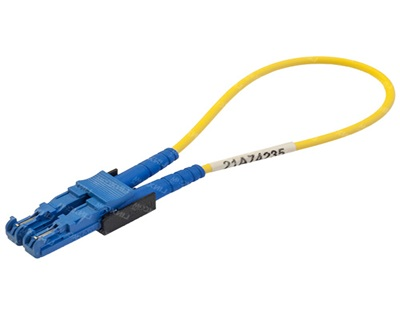
Loopback Adapter
A device that connects the transmit and receive pins of a network interface to test the functionality of the network hardware.
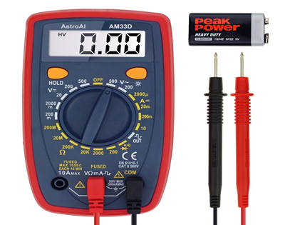
Multimeter
An electronic measuring instrument that combines several measurement functions in one unit. Measures voltage, current, resistance and cable continunity.
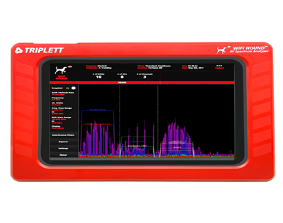
Wi-Fi Analyzer
A software application or a dedicated hardware device that scans the surrounding wireless spectrum to provide detailed information about WiFi networks and help troubleshoot connectivity issues. Can help identifiy overlapping channels or rogue access points.
Network Taps & Port Mirrors
Network TAPS: dedicated hardware device that physically connects to a network link and copies all traffic (inbound and outbound) to a separate monitoring port. Its like placing a splitter in the line between two network devices. (Wireshark, IDS/IPS, DLP, performance tools)
Port Mirroring (SPAN): A software feature on managed switches that duplicates traffic from one or more source ports or VLANs to a designated monitor port on the same switch.
It does not require additional hardware but can be limited by switch performance and port capacity.
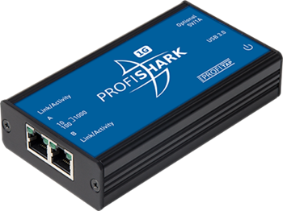
Taps are inline hardware; SPAN is a switch feature that mirrors traffic.
Tap Types
- Passive TAPS: do not require power and use an optical splitter to create a copy of the signal in fiber networks. They are highly reliable as they have no power requirements and do not present a single point of failure in a power outage.
- Active / Regeneration TAPS: Used primarily for copper environments or where signal regeneration is needed, active TAPs require a power source to regenerate the signal to both the network and monitoring destinations. Many include failsafe mechanisms, such as battery backups or relay switches, to ensure network traffic continues to flow during a power failure.
- Aggregation TAPS: aggregate traffic from both transmit (TX) and receive (RX) directions into a single monitoring port, which simplifies connectivity to monitoring tools but can lead to port oversubscription if the traffic exceeds the monitor port's capacity.
- Filterable TAPS: These advanced taps can filter specific packets based on criteria like VLAN tags or IP addresses to downsize traffic and prevent monitoring port oversubscription, which is especially useful for high-speed networks (10Gb+).
- Portable TAPS: compact, tabletop devices designed for easy installation and configuration in various locations, making them suitable for field testing and remote troubleshooting.
- Virtualized TAPS for virtualized environments, these taps provide visibility into traffic between virtual machines (VMs) that never crosses a physical port, sending monitored traffic via encapsulated tunnels to physical monitoring devices.
Port Mirroring (SPAN)
- Source Ports / VLANS select one or multiple ports or even an entire VLAN as the source of traffic to be mirrored. You can often specify whether to capture ingress traffic (entering the switch), egress traffic (leaving the switch), or both (full-duplex).
- Destination / Monitor Port: the port where the monitoring device (like a packet analyzer, IDS/IPS, or performance monitoring tool) connects. The monitoring tool passively listens to the mirrored data stream..
- RSPAN /
ERSPAN: Remote Span (RSPAN) allows traffic to be mirrored
across multiple switches within the same Layer 2 domain. The mirrored
traffic is tagged with a dedicated RSPAN VLAN and carried across trunks
between switches.
Encapsulated Remote Span (ERSPAN) extends this capability by encapsulating mirrored traffic in GRE tunnels, enabling monitoring across Layer 3 networks.
Essential Windows Networking Commands
Purpose: Display network configuration
Shows: IP address, subnet mask, gateway, DNS servers, MAC address, DHCP Server for all network interfaces on that specific device. (Ex. Your desktop computer has an ethernet interface and a built in network interface card on the motherboard).
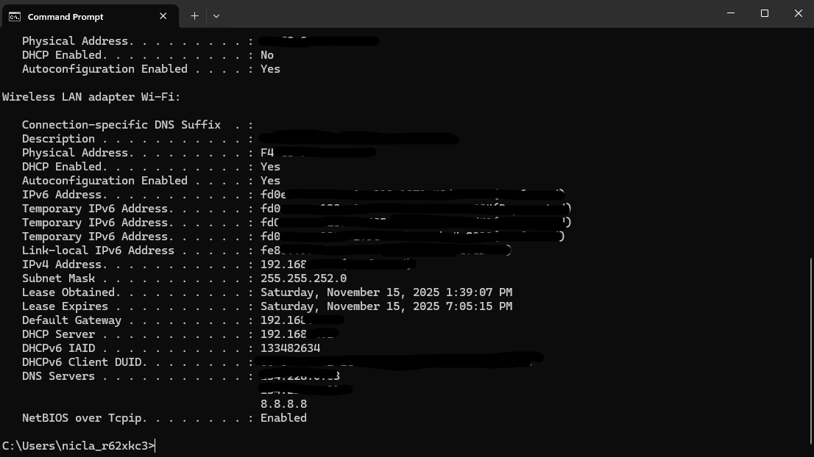
Purpose: Test connectivity to a device
ping -t google.com (continuous)
Uses: ICMP Protocol (Internet Control Message Protocol); checks if host is reachable and records response time
-
Key Elements
-
Reply from...
confirms if the target is reachable.
-
bytes
The size of the data packet sent to target. (Windows default is 32 bytes)
-
time
The roundtrip time in milliseconds (ms). Lower vaules indicate a faster connection and less latency.
-
TTL
Time to live A vaule that tells network routers how long a packet should exist on the network before being discarded, which prevents infinite loops. The default value can indicate the target's operating sytem.
-
Packets: Sent = 4, Received = 4, Lost = 0 (0% Loss)
Indicates that all packets successfully made the round trip, confirming a stable connection.
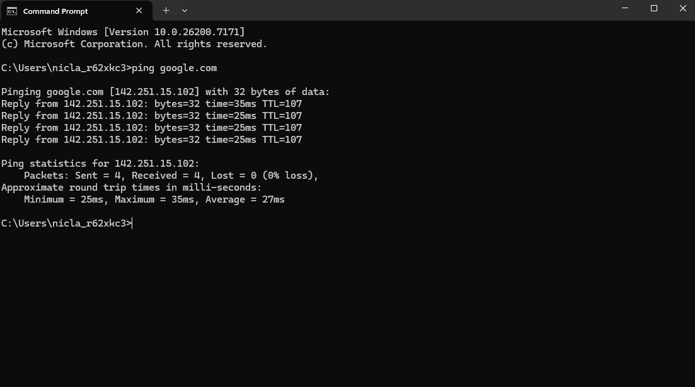
Purpose: shows you each hop your packet takes from your computer to a destination (like google.com). It is extremely useful for troubleshooting slow connections, routing issues, VPN problems, ISP issues, and more.
How it works: The mechanism relies on the Time-To-Live (TTL) value in the IP packet header. Tracert sends the first packet with a TTL of 1. The first router decrements the TTL to 0 and, as per standard protocol. Once TTL reaches 0 the router sends an "ICMP Time Exceeded" message back to your computer. Your computer then sends a second packet with a TTL of 2, which reaches the second router before expiring and sending back an "ICMP Time Exceeded" message. This process repeats, incrementing the TTL by one with each transmission, until the packet reaches its final destination or the maximum number of hops (30 by default) is met. The destination host then sends an "ICMP Echo Reply".
Step by Step:
-
First Packet → TTL = 1
- Router 1 receives it → TTL becomes 0 → Router 1 replies with "Time Exceeded".
- tracert shows Hop #1
-
Second Packet → TTL = 2
- Packet goes through Hop #1 → Hop #2 → TTL becomes 0 → Router 2 replies with "Time Exceeded".
- tracert shows Hop #2
-
Third Packet → TTL = 3
- Packet goes through Hop #1 → Hop #2 → Hop #3 → TTL becomes 0 → Router 3 replies with "Time Exceedd".
- tracert records Hop #3
This process continues until
- The destination responds
- A timeout occurs
- The TTL reaches 30 hops (default max)
Key Elements
-
Hop Number - represents the order of routers you reached. You will get 3 values
which measure latency like
1 22 ms 21 ms 20 msThese 3 values will
- Helps detect jitter (Latency variation)
- Helps detect intermittent packet loss
- Helps confirm consisten routing
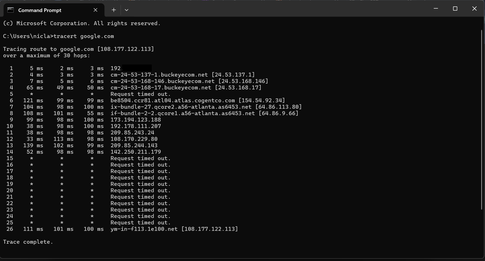
Purpose: Query DNS servers
nslookup google.com 8.8.8.8 (query specific DNS server)
Shows: IP address for domain name, helps diagnose DNS issues
Purpose: Display network statistics and active connections
netstat -b (connections with process names)
Shows: Listening ports, established connections, statistics
Purpose: Display MAC address
getmac /s computername (remote computer)
Shows: Physical address of network adapter
Purpose: Release and renew DHCP lease
ipconfig /renew (requests new IP from DHCP)
Uses: Fixing IP configuration issues, forcing new DHCP assignment
Purpose: View and manage ARP cache (IP to MAC mapping)
arp -d (clear ARP cache)
Uses: Troubleshooting MAC address issues, ARP spoofing detection
Network Troubleshooting Checklist
- 1. Check Physical Connection: Ensure cables are connected, lights on device/NIC
- 2. Verify IP Configuration: Run ipconfig to check for valid IP address
- 3. Test Local Connectivity: Ping default gateway (router)
- 4. Test Remote Connectivity: Ping external IP (8.8.8.8)
- 5. Check DNS Resolution: Use nslookup to verify DNS is working
- 6. Trace Route Issues: Use tracert to identify where connection fails
- 7. Check Firewall Rules: Verify firewall isn't blocking traffic
- 8. Check Device Drivers: Update network adapter drivers if needed
SOHO Networking
Small Office/Home Office (SOHO) networks are small, cost-effective setups typically used in home or small business environments.
SOHO Network Characteristics
- Limited devices: 2-50 devices typically
- Shared internet: Single ISP connection shared via router
- Wireless: Wi-Fi for mobility and convenience
- Basic security: Router firewall + Wi-Fi encryption
- Automatic IP: DHCP for IP assignment
- Simple management: Minimal IT overhead
Typical SOHO Setup
Internet → Modem → Router → Devices
- ISP Line: Cable/DSL/Fiber to modem
- Modem: Converts ISP signal to Ethernet
- Router: Distributes internet to multiple devices
- Devices: Computers, phones, printers, smart home devices
SOHO Security Best Practices
- Change default credentials: Router admin username/password
- Enable WPA2/WPA3: Use strong Wi-Fi encryption (not WEP or WPA)
- Disable WPS: Wi-Fi Protected Setup has security vulnerabilities
- Update firmware: Keep router firmware current
- Enable firewall: Use built-in router firewall
- Guest network: Separate network for visitors